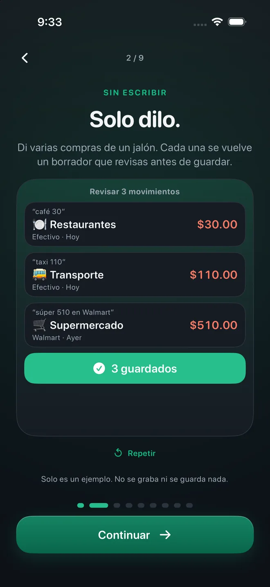

El dinero se te va en gastos hormiga. Que no se escape ni uno.
El control de gastos para iPhone que lleva las cuentas por ti: pega el aviso de tu banco o di “café 45, taxi 120” y te dice cuánto puedes gastar hoy. Si tu banco te avisa por SMS o por correo, esos avisos se registran solos.
Empieza gratisSin conectar tu banco ni crear cuenta
$12.40$3.00$7.00$20.00
9:41
Tu bancoahora
Compra por $12.40 en OXXO con tu tarjeta terminación 6878
Walletahora
Apple Pay · Pemex · $20.00
jueves, 19 de noviembre
Hoy
DISPONIBLE HOY
$50.00$37.60$27.60$7.60
Presupuesto diario $50.00✓ A buen ritmo
🛒OXXOSupermercado SMS−$12.40
🍽️CaféRestaurantes Voz−$3.00
🚌TaxiTransporte Voz−$7.00
⛽️PemexGasolina Apple Pay−$20.00
“café3,taxi7”
Vas a buen ritmo. Llevas el 46% del presupuesto y ya pasó el 58% del mes. Hoy te quedan $7.60.
HablarPegar+ Agregar
Animación ilustrativa · compras de ejemplo
Pega el aviso de tu banco
SMS y correos del banco que se registran solos
Varias compras en una sola frase
Tu mes empieza cuando cobras
Coach financiero que habla español
5 idiomas · iPhone, iPad y Mac
TRES FORMAS DE REGISTRAR
Deja de escribir gasto por gasto. Hay formas más fáciles.
Usa la que te quede más a la mano. Todo llega a la misma lista de movimientos y cuenta para el mismo presupuesto.
GRATIS
Copia el aviso, pégalo y listo.
Copia el texto de un SMS o de un correo del banco, o el detalle del movimiento si la app de tu banco te deja copiarlo, y pégalo en TrackExpenses: el monto, el comercio, la fecha y la tarjeta se llenan solos. Tú solo lo revisas y lo guardas. Las notificaciones de la app del banco no se pueden copiar y ninguna automatización puede leerlas; si tu banco solo te avisa así, di la compra por voz.
Sirve con cualquier banco que escriba el monto en su aviso
Mantén presionado el ícono de la app y toca “Pegar SMS del banco”
Los códigos de verificación y las compras rechazadas no se registran
Leído de tu mensaje: “Compraste en OXXO REFORMA con tu tarjeta con terminación 4402 por $78.00.”
Monto
$78.00
Descripción
OXXO REFORMA
Categoría
🛒 SupermercadoGasto
Tarjeta
••4402
Cancelar✓ Guardar
✓ Guardado · $78.00 en Supermercado
Leído de tu mensaje: “Realizaste un consumo de S/.86.40 en PLAZA VEA SAN ISIDRO con tu Tarjeta de Crédito.”
Monto
S/ 86.40
Descripción
PLAZA VEA SAN ISIDRO
Categoría
🛒 SupermercadoGasto
Cancelar✓ Guardar
✓ Guardado · S/ 86.40 en Supermercado
Animación ilustrativa con dos avisos pegados. Los campos se llenan con lo que la app lee de verdad.
10 GRATIS AL MES · ILIMITADO CON PRO
Llega el aviso y el gasto ya está registrado.
BBVA México, Banorte, Bancolombia y Banco de Occidente pueden mandarte un SMS por cada compra, y muchos bancos avisan por correo. Una automatización de Atajos le pasa esos avisos a TrackExpenses, que registra el monto, el comercio, la tarjeta y la fecha. Los códigos, los pagos rechazados y las promociones se quedan fuera.
SMS del banco, o correos del banco con la app Mail (también los de Gmail)
Montos como los escribe cada país: $1,234.56, $48.900 o S/ 35
Reconoce la cuenta por los últimos dígitos de la tarjeta
Compra por $41.90 en SORIANA con tu tarjeta terminación 6878.
Tu bancoahora
Compra con TDC 6878 en PEMEX $32.20
Tu bancoahora
Tu código de seguridad es 482915. No lo compartas con nadie.
Omitido · código
Tu bancoahora
Tienes un depósito a tu cuenta *4471 de $350.00.
Automatización de Atajos → TrackExpenses
TrackExpensesHoy
🛒SORIANASupermercado · Tarjeta de crédito−$41.90
⛽PEMEXGasolina · Tarjeta de crédito−$32.20
💵Ingreso RevisarCuenta principal+$350.00
Animación ilustrativa de los SMS del banco. Mensajes y montos de ejemplo.
10 GRATIS AL MES · ILIMITADO CON PRO
Dilo y listo: varias compras en una frase.
“Café 45, taxi 120 y súper 850 en Walmart ayer.”
Di una compra o todas las de la tarde. TrackExpenses te muestra lo que entiende mientras hablas, deja de escuchar cuando haces una pausa y arma un borrador por compra, con el monto, la categoría, el comercio y la fecha. La voz se procesa en tu iPhone. Tú solo los revisas y los guardas.
Entiende el día y la cuenta: “ayer”, “con la tarjeta”
Elige en qué idioma hablas en la pantalla de escucha
Los precios como se dicen: “45 con 50” son 45.50
Las marcas conocidas llenan el comercio y la categoría: OXXO, Rappi, Pemex
El detalle del movimiento, copiado dentro de la app del banco cuando te deja: se lee igual. La notificación en sí no se puede copiar.
TU BANCOCompraste $48.900 en D1 CHAPINERO con tu T.Deb *6621, el 18/11/2026 a las 09:12.
$48.900 COPD1 CHAPINERO18 de noviembreGasto
Elige la categoría una vez y la app la recordará la próxima vez que compres ahí.
TU BANCOANDREA, recibiste una transferencia de COMERCIALIZADORA ANDINA SAS por $2450000.00 en tu cuenta *4410 el 18/11/2026 a las 10:30.
$2.450.000 COPCOMERCIALIZADORA ANDINA SAS18 de noviembreIngreso
Un mismo banco escribe los montos de varias formas, hasta sin separadores: $2450000.00. La app las lee todas.
TU BANCOCompra aprobada en DISCO 214 por $ 47.890,25 con tu Visa terminada en 7781.
$47.890,25 ARSDISCO 214Tarjeta ••7781Gasto
Con punto de miles y coma decimal, como se escribe en Argentina.
TU BANCOLe informamos que se ha realizado una compra por $24.990 con Tarjeta de Crédito ****5512 en JUMBO LAS CONDES el 18/11/2026 19:15.
$24.990 CLP🛒 SupermercadoJUMBO LAS CONDES18 de noviembreGasto
En Chile los bancos avisan sobre todo por correo, y la automatización de correo registra la compra.
TU BANCORosa Qui* te envió un pago por S/ 35. El cód. de seguridad es: 418
S/ 35.00Rosa QuiIngreso
Aunque trae un código de seguridad, es un pago real, y la app lo lee como ingreso.
TU BANCOTu código de verificación para la compra por $3,499.00 en COPPEL es 552817. No lo compartas.
OmitidoUn código de verificación, no una compra
El código menciona un monto, pero no se gastó nada: no se registra.
TU BANCOCompra rechazada por $1,250.00 en LIVERPOOL con tu tarjeta terminación 8810. Fondos insuficientes.
OmitidoEl pago no pasó
Una compra rechazada nunca llega a tus totales.
TU BANCO¿Compraste en SHEIN por $1,299.00? Si no fuiste tú, bloquea tu tarjeta en la app.
OmitidoEs una pregunta, todavía no es un gasto
Las preguntas de seguridad, como “¿Reconoces esta compra?”, no se registran.
PRESUPUESTO DIARIO
Ten claro cuánto puedes gastar hoy.
Tu mes puede empezar el día que cobras, cualquier día del 1 al 31. TrackExpenses aparta primero los gastos fijos pendientes y reparte el resto entre los días que quedan. Si hoy gastas menos, mañana te toca más.
Cada barra de presupuesto marca en qué punto del mes vas, así un 46% gastado sí te dice algo
Mueve dinero entre presupuestos o cubre lo que te pasaste, sin cambiar el total (gratis)
Un presupuesto diario para algunas categorías hasta la fecha que elijas, ideal para un viaje (Pro)
¿Te pasaste? Te dice por cuánto y cuándo empieza un presupuesto nuevo
El presupuesto diario y los pronósticos son parte de Pro. El ritmo, los días que faltan y lo gastado y lo disponible son gratis.
Tu coach financieroLee tu mes · te responde en español
¿Voy a buen ritmo este mes?
Sí. Llevas el 46% del presupuesto y ya pasó el 58% del mes. Solo vigila Supermercado: ya va en 82%.En tu iPhone · gratis
✦ ¿Qué puedo mejorar?
Los cafecitos son tu compra pequeña más frecuente: 21 este mes. Si preparas tu café en casa tres días a la semana, ahorras cerca de un tercio de ese gasto.IA · revisa las cifras
“¿Voy a buen ritmo?”, “¿Cómo me fue en septiembre?”, “¿Cuánto gasté hoy?”. Tu coach contesta las preguntas de todos los días en tu iPhone, al instante y gratis. Si la pregunta es abierta, consulta a Claude de Anthropic (solo si aceptas) con un resumen de tu mes; nunca le manda tus notas, recibos, nombres de cuenta ni saldos.
Lee tu mes pasado y te sugiere un límite; únete al reto y te da seguimiento cada semana (Pro)
Escribe “café 45 taxi 120” y se registran los dos gastos, gratis
10 preguntas gratis a la IA al mes en cada dispositivo; más con Pro
5.0 de 5 en el App Store, con 8 calificaciones en 5 países (datos del 20 de noviembre de 2026). Estas son las reseñas escritas, palabra por palabra y en su idioma original:
★★★★★
Everything included
This is the BEST app by far, and I have tried so many apps, it has everything you need to be on track. Wallet transactions, email notifications and SMS, all can be captured using IO-shortcuts, and it offers lifetime subscription, which is exactly what I was looking for. Hope there is a BlackFriday deal for everyone. Keep up the good work!
jrgrodriguezApp Store, Canadá · noviembre de 2026★★★★★
Amazing app, truly next level 🤩
This app is amazing, amazing, AMAZING ❤️
It’s honestly the first time I’ve used an expense tracker that works this well.
The best feature is that I don’t have to manually enter every single expense. The app can automatically detect my bank SMS messages and add my expenses with the correct amounts and categories. How cool is that?
I also love that I can simply copy a bank transaction message and paste it into the app, and it does the rest.
And the voice recording feature is just WOW 😍 I can literally say all my expenses in one recording, and the app adds them for me. I don’t even have to record them one by one.
This is truly a next-generation app. I’ve never seen these features work together so smoothly in an expense tracker.
I 100% recommend everyone to download it and give it a try. You’ll love it ❤️
Iman-MohamedApp Store, Emiratos Árabes Unidos · noviembre de 2026★★★★★
Very clean and full features
The App provides a lot of convenient features that cover all my needs. Keep up the good work and consistent updates.
AAllaithyApp Store, Egipto · noviembre de 2026★★★★★
The best App
Simple, easy to use, track my expenses with hands free from my bank sms automatically it logged the expenses, also by talking to it or just say what I spend, it’s very smart app.
Meto OmarApp Store, Emiratos Árabes Unidos · noviembre de 2026★★★★★
تطبيق ممتاز لمن يبحث عن التحكم بالميزانيه
استخدمت التطبيق لكم يوم ووجدت ان التطبيق فك لي ازمة (اين يذهب الراتب) و (كم احتاج لاخر الشهر) و التحكم بالمشتريات (لو اشتريت هذا الشيء هل سيكفي المبلغ لاخر الشهر؟)
بالفعل تطبيق يستحق ٥ نجوم
Kt220022App Store, Emiratos Árabes Unidos · noviembre de 2026★★★★★
Worth for money
I like it
Anish1501App Store, India · octubre de 2026
LA APP EN ESPAÑOL
Pantallas reales. Desliza para verlas.
PRESUPUESTO GRATIS + PRO
Tu mes empieza cuando cobras.
Lo que te queda, el día de hoy marcado y tu presupuesto diario.
POR VOZ 10 GRATIS AL MES
Una frase, tres gastos.
Cada compra que dijiste, lista para revisar y guardar.

SMS DEL BANCO 10 GRATIS AL MES
Los avisos, convertidos en gastos.
Una compra en Walmart y otra en Pemex; el código de seguridad se queda fuera.
COACH FINANCIERO GRATIS + PRO
Un coach que habla tu idioma.
“¿Qué puedo mejorar?”: los cafecitos suman $483.00 este mes.
Pantallas reales de la app en un iPhone, con datos de ejemplo. Tres son de la introducción de la app.
EMPIEZA GRATIS
Un registro de gastos completo, gratis. Con Pro, todavía más.
GRATIS
Todo para crear el hábito.
Movimientos manuales, presupuestos y búsqueda, sin límite
Tu mes desde el día de pago, con ritmo y estadísticas
Mover dinero entre presupuestos y cubrir lo que te pasaste
Alertas de presupuesto y recordatorios de pagos
Sincronización con tu iCloud privado en iPhone, iPad y Mac
3 cuentas y 2 movimientos recurrentes
Cada mes, en cada dispositivo: 10 registros por voz, 10 importaciones automáticas de avisos del banco y 10 preguntas al coach con IA
PRO
Planea más, sin límites.
Registro por voz e importaciones ilimitados
Cuentas y movimientos recurrentes ilimitados
Plan del salario, pronósticos y simulaciones
Presupuesto diario: general, por presupuesto o solo para los que elijas, hasta la fecha que quieras
Retos con el coach y más preguntas a la IA
Exportar y compartir, importación CSV y respaldo completo
Temas e íconos alternativos
Mensual, anual o un solo pago (Vitalicio), al precio de la App Store de tu país. Cuando Pro termina, nada de lo que guardaste se bloquea.
BUENAS PREGUNTAS
Antes de descargarla.
¿TrackExpenses se conecta con mi banco?
No. No hay conexión con tu banco, no te pide la clave del banco y no necesitas crear una cuenta en la app. Tú registras los movimientos por voz, pegando el aviso o con automatizaciones de Atajos para los avisos del banco y las compras con Apple Pay.
¿Cómo lee los avisos del banco sin leer mis mensajes?
Tú creas en Atajos una automatización que le pasa a TrackExpenses cada SMS o correo del banco que contenga la palabra que elijas. La app solo lee lo que la automatización le entrega y guarda el resultado, nunca el texto del mensaje. No abre tus mensajes ni tu correo.
¿Me sirve si mi banco solo me avisa en su app?
Sí, aunque de otra forma. Una notificación no se puede copiar y ninguna automatización del iPhone puede leer las notificaciones de otra app. Si la app de tu banco te deja copiar el detalle del movimiento, pégalo en TrackExpenses y el monto, el comercio y la fecha se llenan solos; si no, di la compra por voz. Y si tu banco también te manda un SMS o un correo por cada compra, una automatización los registra sola.
¿TrackExpenses es gratis?
Sí. Gratis tienes movimientos manuales ilimitados, presupuestos, tu mes desde el día de pago, estadísticas, búsqueda y sincronización con tu iCloud privado, más 10 registros por voz, 10 importaciones automáticas de avisos del banco y 10 preguntas al coach con IA al mes en cada dispositivo. Pro quita esos límites y agrega el plan del salario, los pronósticos, el presupuesto diario, la exportación de tus datos y el respaldo completo, con suscripción mensual o anual, o con un solo pago.
¿El coach financiero manda mis datos a una IA?
Solo cuando le preguntas algo que tu iPhone no puede responder solo, y solo si aceptas. Entonces tu pregunta, la conversación y un resumen de este mes y del anterior van a Claude de Anthropic a través del servidor del desarrollador; si el coach necesita más, totales de hasta 13 meses o hasta 20 compras. Nunca tus notas, recibos, nombres o números de cuenta ni saldos.
¿Qué idiomas habla?
Español para Latinoamérica, inglés, árabe con el diseño completo de derecha a izquierda, alemán y portugués de Brasil: cada pantalla, el registro por voz, los avisos del banco y el coach financiero.
¿Mi mes puede empezar el día que cobro?
Sí. Elige cualquier día del 1 al 31 y tus movimientos, presupuestos y gráficas siguen ese mes. Es un periodo mensual desde tu día de pago, no un periodo quincenal.
¿Funciona en iPad y Mac?
Sí. TrackExpenses funciona en iPhone y iPad con iOS 17 o posterior y en Mac con chip de Apple, y gracias a tu iCloud privado ves los mismos movimientos en todos.
¿Dónde se guardan mis movimientos?
En tu dispositivo y, si quieres, en tu iCloud privado, para verlos en tus otros dispositivos Apple. No necesitas una cuenta en la app. La Política de privacidad explica cómo se guardan los datos, la voz, el coach y las compras.
Control de Gastos por Voz, para iPhone, iPad y Mac.
5.0 de 5 en el App Store · 8 calificaciones en 5 países · Datos del 20/11/2026
Datos de la app: qué es gratis y qué agrega Pro
Control de Gastos por Voz (TrackExpenses) es una app de Mohamed Elatabany para iPhone y iPad con iOS/iPadOS 17 o posterior, y para Mac con chip de Apple. Está en español para Latinoamérica, inglés, árabe con el diseño completo de derecha a izquierda, alemán y portugués de Brasil. No necesita cuenta en la app ni acceso a tu banco. Puedes pegar el aviso de tu banco (un SMS, un correo o el detalle de un movimiento que la app de tu banco te deje copiar) y el monto, el comercio, la fecha y la tarjeta se llenan solos; automatizaciones opcionales de Atajos registran los avisos que llegan por SMS o por correo (con la app Mail, también los de Gmail) y las compras con Apple Pay. La app no lee tus mensajes ni tu correo. Una notificación no se puede copiar y ninguna automatización del iPhone puede leer las notificaciones de otra app, así que una compra que solo llega como notificación se registra por voz o a mano. Los códigos de verificación, las compras rechazadas y las preguntas como “¿Reconoces esta compra?” no se registran. El registro por voz funciona en el propio dispositivo, en los modelos e idiomas compatibles, y crea borradores: varias compras caben en una frase y en la pantalla de escucha eliges el idioma en que hablas. Al mantener presionado el ícono de la app aparecen “Dictar un gasto”, “Nuevo gasto”, “Pegar SMS del banco” y “Pregúntale a tu coach”. Gratis tienes movimientos manuales ilimitados, presupuestos, mover dinero entre presupuestos en el periodo actual y cubrir lo que te pasaste sin cambiar el total, días restantes y montos gastados y disponibles, alertas de presupuesto (al 80% si vas más rápido de lo planeado y cuando un presupuesto se excede), recordatorios de pagos a las 9:00 del día anterior, estadísticas, una búsqueda que suma lo gastado y lo recibido en todos los periodos, sincronización con tu iCloud privado en iPhone, iPad y Mac, 3 cuentas, 2 movimientos recurrentes, 10 registros por voz guardados y 10 importaciones automáticas exitosas de avisos del banco por mes calendario en cada dispositivo. El coach financiero lee tu último mes de presupuesto y sugiere un límite. Lo que responde con reglas (lo que gastaste hoy, una categoría, tus cuentas o cualquier mes), las gráficas, los archivos y los movimientos que escribes se resuelven en el dispositivo. Las preguntas abiertas van a Claude de Anthropic por un servidor del desarrollador solo si aceptas, con la conversación, un resumen de este mes y del anterior y, si el modelo lo pide, totales de hasta 13 meses o hasta 20 compras con fecha, comercio, categoría y monto; nunca notas, recibos, nombres o números de cuenta ni saldos (10 preguntas gratis al mes en cada dispositivo). Los avisos que pasan del límite gratis se guardan bloqueados fuera de tus totales: Pro los agrega todos; si no, el límite del mes siguiente libera los que alcance. No se pierde nada y tu historial nunca se bloquea, tampoco cuando termina Pro o la prueba gratis. Pro agrega registro por voz, importaciones, cuentas y movimientos recurrentes ilimitados, retos con el coach y más preguntas, el plan del salario, pronósticos, presupuesto diario general, por presupuesto o para las categorías que elijas hasta una fecha dentro del periodo, con los gastos fijos descontados primero, simulaciones, “Exportar y compartir” (toda exportación es Pro desde la versión 1.15.0: CSV de un mes, de un periodo o de todo, y el respaldo completo), importación CSV, respaldo JSON completo con restauración, temas e íconos alternativos. Hay suscripción mensual y anual y un pago único (Vitalicio). Los cálculos salen de tus movimientos y no son asesoría financiera.
 $12.40
$12.40 $3.00
$3.00 $7.00
$7.00 $20.00
$20.00